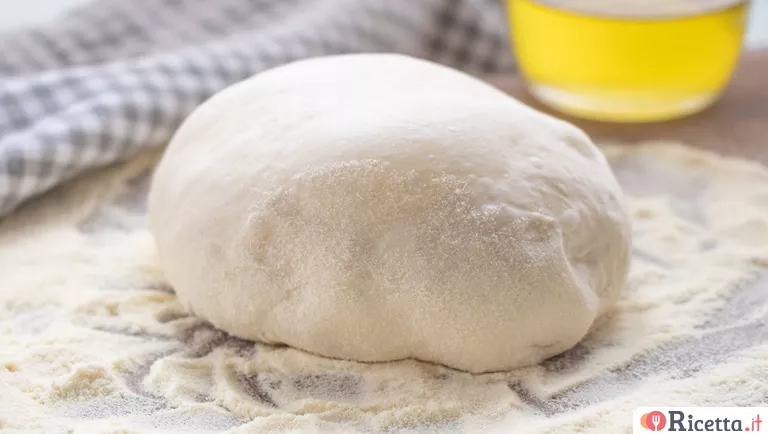

Pizza dough
pizza

 Total Time Total Time |
|---|
| 4.75 hours |
 Ingredients
Ingredients
- 500 g 00 flour
- 7 g fresh brewer’s yeast
- 3 g dry brewer’s yeast
- 8 g salt
- 10 g extra virgin olive oil
- some semolina flour
:cooking: Cookware
- 1 wooden spoon
- 1 oven
- 1 baking tray
- 1 cast iron baking tray
 Instructions
Instructions
Step 1
Place the 00 flour , sifted, into a bowl and add the finely crumbled fresh brewer’s yeast or dry brewer’s yeast, then mix using a wooden spoon.
Step 2
Pour in the water a little at a time, continuing to stir so that the flour absorbs it and the yeast dissolves completely. Add the salt and pour in the extra virgin olive oil, still mixing.
Step 3
This type of roughly mixed dough is called 'no knead'.
Step 4
Cover the bowl with a sheet of plastic wrap and let it rise for 30 minutes at room temperature.
Step 5
Ideally, place it inside the oven using the 'oven off' function to maintain a steady temperature of 26-28°C.
Step 6
If your oven doesn’t have this feature, you can wrap the bowl in a blanket and keep it in a draft-free spot.
Step 7
After this time, transfer the dough to a work surface and fold it over itself, repeating the fold on all four sides.
Step 8
Then, three times, stretch the dough toward yourself and fold it back.
Step 9
Don’t worry if the dough feels quite sticky at first (you can sprinkle some flour on the surface to help).
Step 10
Place the dough back into the bowl, cover with plastic wrap, and let it rise for another 20 minutes.
Step 11
Repeat this folding and resting process two more times;
Step 12
on the last round, before placing the dough back into the bowl, drizzle it with a little oil and finally let it rise at room temperature for at least 3 hours.
Step 13
Shaping the pizza into pans
Step 14
Take the dough, place it on the work surface, and divide it into three equal portions.
Step 15
This way, you will get pizzas of the right thickness: crispy on the outside, soft on the inside.
Step 16
(Alternatively, the full amount of dough can be used for one rectangular baking tray.)
Step 17
Cover the dough balls with a clean cloth or plastic wrap and let them rise again for another hour at room temperature.
Step 18
Sprinkle some semolina flour on the surface and flatten each dough ball by pressing around the edges and the center with your fingers.
Step 19
Remove any excess semolina and transfer the dough to a baking tray (26-28 cm), greased with olive oil (it’s okay if the dough doesn’t reach the edges yet).
Step 20
Let it rest for about 30 minutes more, then stretch it out to the proper size with your hands.
Step 21
Top with tomato sauce and your preferred ingredients.
Step 22
Baking the pizza
Step 23
Drizzle a little extra virgin olive oil over the top and bake in a preheated oven at the highest temperature (300°C) for about 10 minutes,
Step 24
or at 200°–220°C for 15 minutes.
Step 25
You can recreate a stone-baked effect by heating a cast iron baking tray upside down (thicker trays work better) and baking the pizza on top of a sheet of parchment paper.
 Source
Source